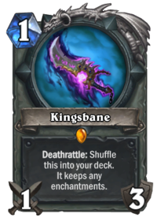

ㄹㅇ 실력이 개중요한덱이면서 단언컨대 하스스톤에서 제일 재밌는 덱.
실력이 진짜 중요하니 뇌에 암걸린 찐따들은 어그로덱이나 굴리자.
원한맺힌 소환사로 이샤라즈뽑고 이샤라즈로 이샤라즈뽑는 개미친 사제새끼들도 핸드상황만 좋다면 카운터칠수 있음.
다만 이 덱으로 웬만큼 핸드 잘풀려도 멀록기사는 거의 못이긴다고 봐야하고, 법사같은애들도 핸드 진짜 잘풀려야 이길 수 있음.
기본적으로 사제, 컨흑, 주문냥 상대로 유리하고 비법, 멀록기사같은 애들 상대로 약함.
양심이 충ㅡ만한 근본있는 덱이라서 얘로 이기고있으면 상대가 대단하군! 이런거 잘해줌
다만 상대하는 사람 입장에선 플레이스타일 자체가 좀 빡칠 수 있는데 승률이 낮은 덱이라 얘네가 널 이기기 이전에 평균적으로 두판 정도는 지고 왔을거임.
그러니 왕파도적 적으로 만나면 인성질은 되도록 자제하도록 하자.
내년에는 점쟁이가 야생으로 감 ㅠㅠ 고이 보내줍시다.